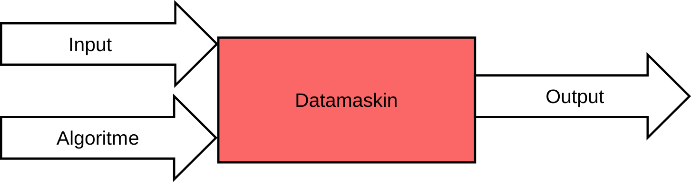
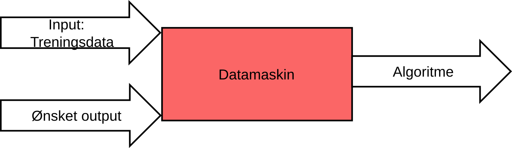

Generativ KI
Når vi snakker om KI i hverdagen er det som oftest generativ KI vi tenker på. ChatGPT, Copilot og NotebookLM er eksempler på generativ KI.
Det kalles generativ kunstig intelligens fordi den genererer (lager) helt nytt innhold som for eksempel tekst, bilde eller lyd. En annen type KI er diskriminativ kunstig intelligens som klassifiserer det som finnes fra før. Generativ og diskriminativ KI er èn måte å bryte opp hva kunstig intelligens er. I denne klassifiseringen har vi i tillegg prediktiv kunstig intelligens som har som mål å prediktere (beregne/forutse) en sannsynlig utvikling av gitt data.
Eksempler på generativ, disktriminativ og prediktiv KI
En KI-chat som genererer et møtereferat basert på dine møtenotater
En KI som kan identifisere om et fotografi er av en hund eller en katt
Her er et klassisk eksempel værmeldingen.
Alle tre bygger på det som kalles maskinlæring. Maskinlæring er en metode der teknologien lærer fra store mengder date, og der systemet finner mønstre på egen hånd. Forskjellen på dem er hva slags type oppgave de er laget for. Du kan lære mer om maskinlæring og hva som skiller diskriminativ og prediktiv KI fra generativ KI under “Fordypning”.
I dette kurset vil du hovedsakelig lære om generativ kunstig intelligens, som bygger på store språkmodeller og derfor genererer tekst. Du vil også lære litt om KI til bildegenererig, som er en annen type generativ KI, spesialisert på bilder.
Fordypning for de nysgjerrige
Diskriminativ KI
Diskriminativ kunstig intelligens er programmer som kan skille mellom ulike typer innhold. Det kan for eksempel være et program som kan se om et bilde er av en hund, en katt eller et annet dyr. Eller oppgaven kan være å klassifisere tekster etter tema, slik som spamfiltre. Selvkjørende biler trenger diskriminativ KI blant annet for å oppdage ting og mennesker rundt seg.
Prediktiv KI
Prediktiv kunstig intelligens prøver å forutsi utfallet av en hendelse. Værmelding er et velkjent eksempel på at det kan være nyttig å forutsi hva som kommer til å skje. Prediktiv kunstig intelligens leter etter mønstre i data som kan si noe om sannsynligheten for hendelser.
Hva er maskinlæring?
Mennesker kan lære av erfaring. I maskinlæring lærer programmet av data (eller forsøker å gjøre det). Den stadig økende mengden tilgjengelige data har ført til sterkt økende interesse for maskinlæring. Maskinlæring er et sett av statistiske metoder som kan brukes til å trekke ut informasjon fra data.
Maskinlæring skiller seg fra tradisjonell programmering i hvordan vi løser problemer. Et tradisjonelt program bruker en algoritme på noen inndata (input) for å produsere et resultat (output), som vist på figuren Tradisjonell programmering.
{kind=link}

Tradisjonell programmering
Med maskinlæring er algoritmen ukjent, og det er nettopp den vi ønsker å lære. I veiledet læring har vi et sett med treningsdata og tilhørende ønskede utdata. Hvis oppgaven er å merke bilder, så kan utdataene være merkelappen til bildet, som for eksempel “hund” eller “katt”. Fra dette vil vi lære en algoritme eller funksjon som kan produsere de ønskede utdataene fra de gitte inndataene. Figuren Maskinlæring illustrerer denne forskjellen.
{kind=link}

Maskinlæring